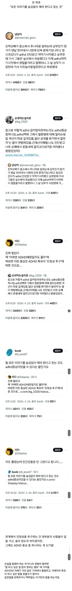

헉 나 같은말 두번 하는데
헉 나 같은말 두번 하는데
아...어렸을때 중증 ADHD였고
지금은 극한의 진정성 투명함 추구충인데...
그냥 내가 투명하고 내 자신에도 떳떳한 사람이되고싶어서 그런거였는데
이것도 병이였다니!!!!!!!!!!!!!!!!!!!!!!!!!!!!빨간약 먹은것 같다
거짓말하면 그게 환자 스스로 자꾸 반추되니까 힘들어서 그냥 솔직하게 말해버리고 자폭하는듯
cex cex 거리는것도 adhd 일까? 그럼 모든 남자들은...
나도 adhd 인데 글읽으면서 상무한테 약먹는거 말한게 뭐가 문제인지 바로 파악이 안됨ㅋㅋ
내가 갑옷 거인이고 얘가 초대형 거인이야
바로 이해가 됐어!!!
친구중에 뭐만하면 지가 경계선 이라는 둥 adhd이라는 둥 시바꺼 그냥 멘탈 약한걸로 패션정병짓 하길래 진지하게 진단 받았냐 너도 약먹냐? ㄹㅇ 찐 정병취급했더니 그 뒤로는 안그러던데 요즘 뭐민하면 다 패션정병임 ㅅㅂ
세상은 어떻게보면 다 가면을 쓴다고 볼 수 있는건데 솔직해지라고 하는것고 폭력이지
진실을 말하는게 아니라 지가하고싶은말을 끝도 없이 지껄이는거임
댓글들이 너무 정신 없다
ㄹㅇ
성인 ADHD 가지고 있는데 어느정도 이해는 감 ㅋㅋ
ADHD의 대표증상인 산만함이 충동억제의 문제인데 이 ADHD라는게 증상도 여러가지라서 단순히 산만함으로만 정의되는게 아님. 그래서 ADHD 가지고 있으면 말실수 자주할 때 있고 그걸 자기가 인지하고 막 괴로워하는거지
약먹으면 충동조절이랑 도파민 조절되니까 나아지긴 한데 이걸 매일 먹고 평생 먹어야하는 압박감도 있음
나도 고생 많이 했음 ㅇㅇ 아동기부터 있어서 충동억제 거의 못하니까 사고치고 말실수 잦아가지고 성인되어서나 확진받고 고치느라 애먹었지
당사자도 괴롭다 ㅋㅋ
난가?
자폐와 ADHD의 기저가 같다는게 무슨 근거가 있는거임? 그냥 그럴듯한 아무말일것 같은데.
증상 중에 하나긴 하지. 똑같은말 반복하고 생각나는 말 다 해야하고 ㅋㅋㅋㅋ
그럼 adhd는 절때 보추퍼리야동보면서 후장딸치면 안되겠군 숨김없이 말해버릴수도 있잖아?
ㅆㅇㅈ ㄹㅇ adhd있음 나는 초대형거인이야 ㅇㅈㄹ 함
온세상이 adhd구만
미리 털어놓지않으면 내 머릿속에서 사라져서 이 정보가 영원히 유실될거 같음.
내가 저래서 전직장 그만둠.. ㅅㅂ
지금 직장에서도 못참고 말을 많이 하다 정신차리고 입다물게됨.
왠만하면 회식 가더라도 1시간있다가 바로나옴
나 사실은 자지 존나 거근 대물이야!!
어릴때는 그랬다 사회성 키우면서 말 줄이고 그랬는디
난가
"당신은 너무 꼴려요. 당신과 ㅅㅅ하고 싶습니다."
우리 와이프네.. 애가 하얀거짓말 빨간거짓말 이런걸 못함
그냥 사실만을 말함..
자폐랑 adhd가 같은 기저라는 말 처음 듣는데
이다. 디씨 화석 중 하난데 아직 활동하나보네 ㄷㄷ
어...너무 난데... ADHD가 아니라면... 자폐임?
본인이 ADHD 같으면 진짜 정신과 가서 진단 받고 약을 타봐라 진짜 먹기 전후의 세상이 달라지니까
난 대학원때까지 안 먹다 취직하고 먹어 봤는데 평생 내가 어떤 세상을 살아왔던건가 싶음